Your digital products stall between strategy and launch. I take them from feasible to shipped.
See the work.I take products past the workshops and journey maps and into production.A strategist who reads the code, runs the repo, and directs the build.
Juan Diego Saire — DesignOps
WORK
Built, not just mapped.
Three builds where the call and the code were mine.
-
Start a conversation.
Design system · Front-end
A design system I built and govern end to end.
-
Start a conversation.
Product · Payment platform
The TUUA platform I designed, prototyped, and handed to engineering.
-
Start a conversation.
Prototype · Passenger journey
A high-fidelity prototype of the full airport passenger journey.


CAPABILITIES
Three mandates, one operator.
Not a commodity programmer — the strategist who calls feasibility, then builds.
EVOLUTION
The making of the operator.
I came down from strategy and picked up the build. Here’s the arc.
-
Industrial and Commercial Engineering, specialization Corporate Finance. The systems-and-process grounding under everything since.
-
South America’s first LNG plant. Held contractor deliverables to quality, schedule, and spec across 35 EPC projects — vendor governance, learned early.
-
Full-time, three continents (UVic, Canada; Maastricht, Netherlands). First in class. Strategic Consulting.
-
Taught 1,200+ students; mentored 29 project teams through end-to-end UX; seeded Communities of Practice.
-
MicroMasters in UX Design: the full UX lifecycle, including a UX-management track on team operations and process standardization.
-
Innovation’s seat on the most critical post-terminal program: designed and delivered the TUUA payment platform (now 130,000+ passengers monthly), articulated planning across five central areas — Finance, IT, Terminals, Commercial, Reputation — and trained 70 staff to 3.88/4.
McKinsey Forward — McKinsey.org (2025) · Microsoft Program Management (2026).
-
Designed, built, and govern a full system end to end: tokens, 10 organisms, a 175-key bilingual engine, hand-written, WCAG AA.
Microsoft Front-End Developer (in progress).
-
Bringing this systemic way of working to a design organization scaling one system across many markets.
Microsoft Front-End Developer (in progress).
TRACK RECORD
Proof, by the numbers.
Real work leaves real numbers.

Let's talk.
Tell me about the team and the challenge.